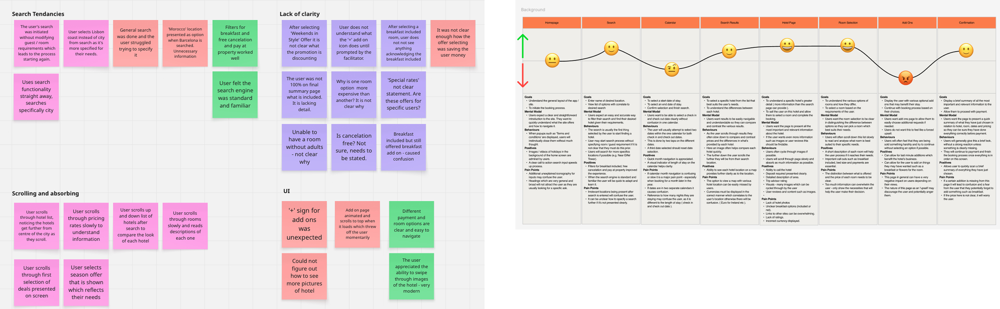
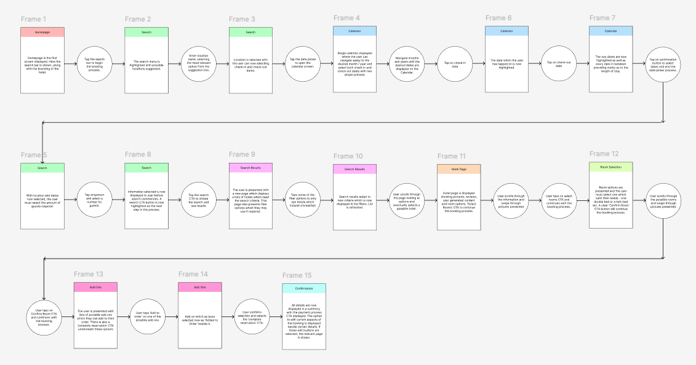
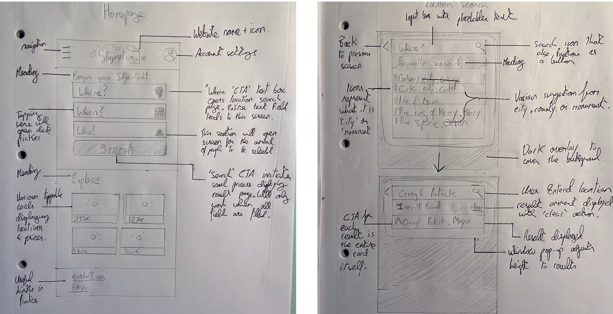
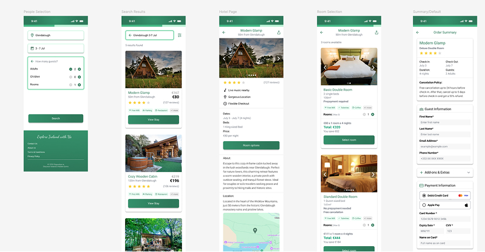
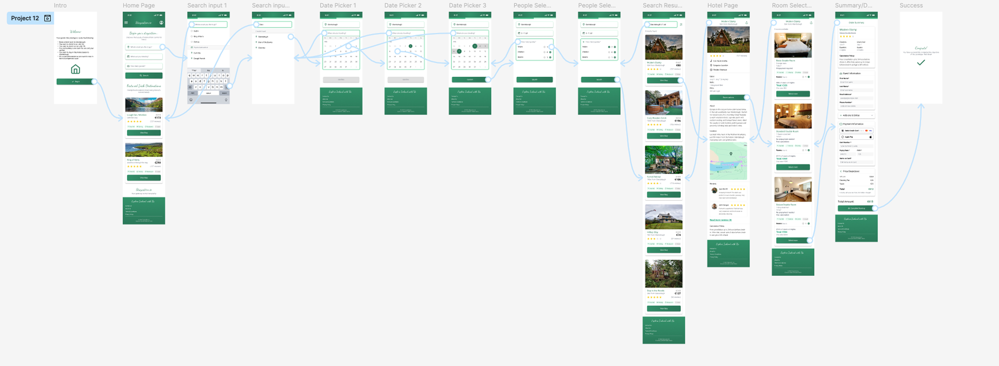
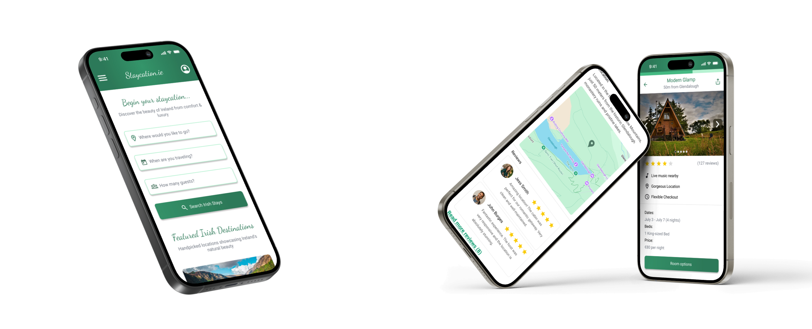

Home  ESB Networks Online Account
ESB Networks Online Account
Staycation.ie is a mobile hotel booking website designed to celebrate Irish culture and make local travel easy and enjoyable. This project was the capstone of my Professional Diploma in UX Design (Level 6) and earned a 95% grade, exceeding expectations for research depth, usability, and creativity.
I wanted to create a hotel booking platform that feels distinctly Irish while delivering a seamless, intuitive booking experience. The design needed to:

I began with user research and competitive analysis:

To understand and optimise the user journey, I created a user flow diagram to represent visually the steps a user takes to accomplish the goal of booking a hotel room. Circular nodes represent actions and the rectangular nodes represent screens, colour coded to make them easier to perceive.

UX Design institute insisted at this stage of the process to create wireframes the old school method - pencil and paper. I drew out every screen in the interaction design process by hand using a H2 pencil and explaining each part of a screen in pen as seen below.
While at first I wanted to use modern digital tools such as Figma to wireframe, the hand-drawn approach meant I really understood how each screen worked, and allowed me to spot potential visual issues ahead of the UI design stage.

I built high-fidelity screens in Figma, starting in grayscale before layering typography, imagery, and gradients. After which I Incorporated Irish cultural elements subtly through colour palette and imagery. I leveraged design system principles learned at ESB for consistency in cards, buttons, and spacing.
In the final stages of design I experimented with Figma’s AI tool ‘Figma Make’ to enhance accessibility and aesthetics. I selectively applied improvements while maintaining design integrity—combining human judgment with AI efficiency.

One of my favourite parts of the design process was interaction mapping in the Prototype tool of Figma. Having worked in the games industry as a UX engineer, this came to me very naturally. Below is the entire interaction flow from the start of the process until the final success screen once a room is booked.
used variables to carry inputs from one screen to another, applying similar logic that I learned from programming Javascript and C++ applications. Designing within a width that fits an iPhone 13 mini - which could dynamically expand (fill) for other devices, allowed for a fully dynamic prototype that could fit many devices.
Access the prototype via Figma

The final project achieved a grade of 95% as it surpassed the expectations of the professional diploma. Thanks to the proper research, interaction mapping, and wire frame creation, the final designs were strong and rigid. This, along with the help of AI to ensure accessibility and aesthetic appeal, secured me a high grade along with great experience. It serves as an excellent showcase of my UX skills.
